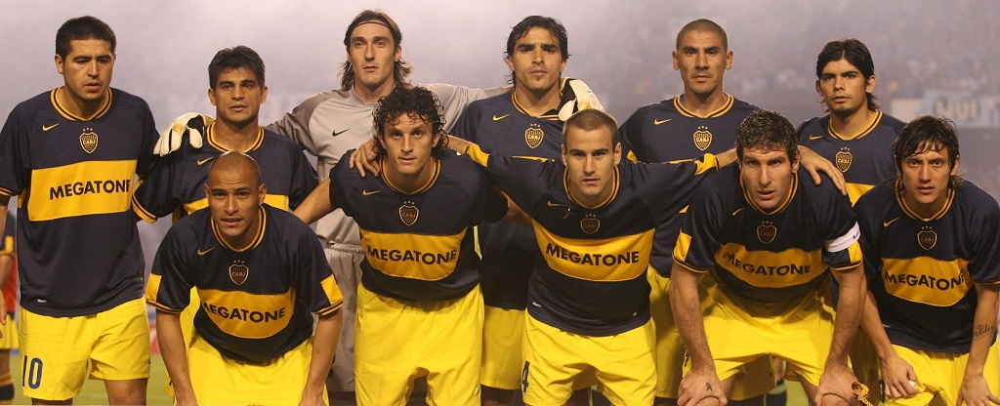
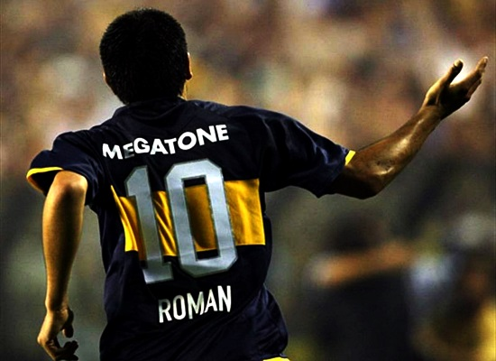

Sitio Homenaje a Juan Roman Riquelme
Su nacimiento, curiosamente, tuvo lugar un día antes de la primera conquista argentina en una Copa Mundial de Fútbol. De pequeño comenzó a relacionar su vida con el mundo futbolístico, siendo partícipe en diferentes juegos realizados en potreros de la localidad de San Fernando, donde se destacó jugando para diferentes asociaciones y clubes barriales.
